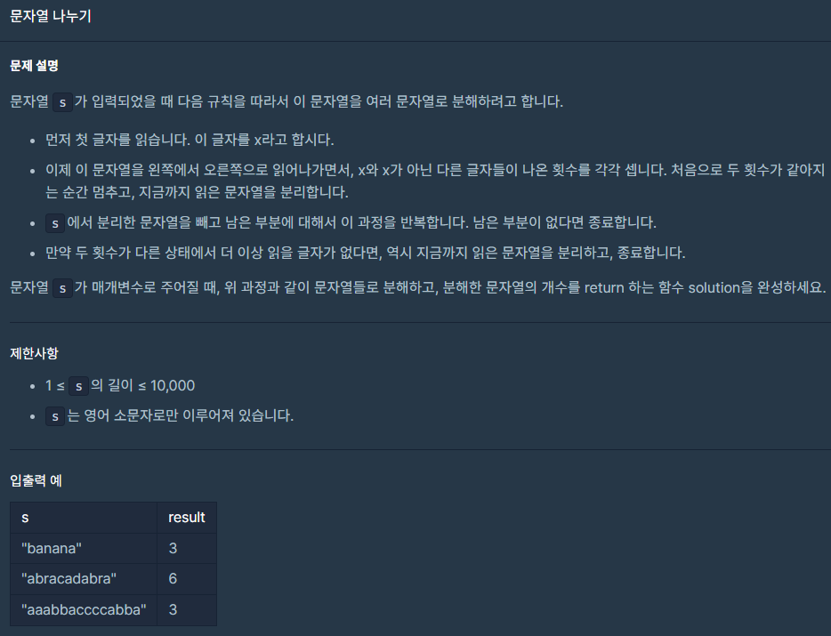

level : 1
신호연
April 1, 2023

def solution(s): cnt = [0,0] sep_num = 0 for idx in range(len(s)): if cnt == [0,0]: x = s[idx] print("첫번째 문자:",x) if s[idx] == x: cnt[0] += 1 else: cnt[1] += 1 if cnt[0] == cnt[1]: sep_num += 1 cnt = [0,0] if idx == len(s) -1 and cnt[0] != cnt[1]: sep_num +=1 return sep_num